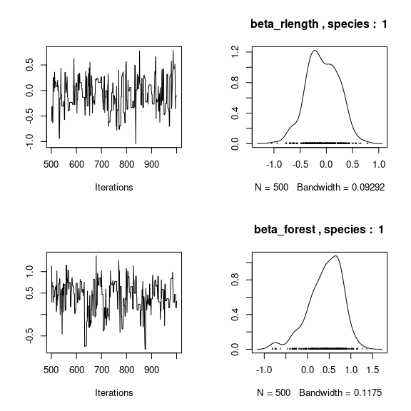
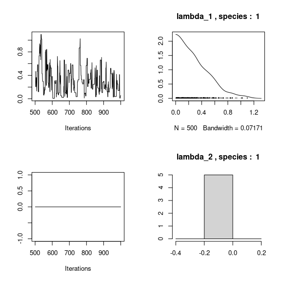
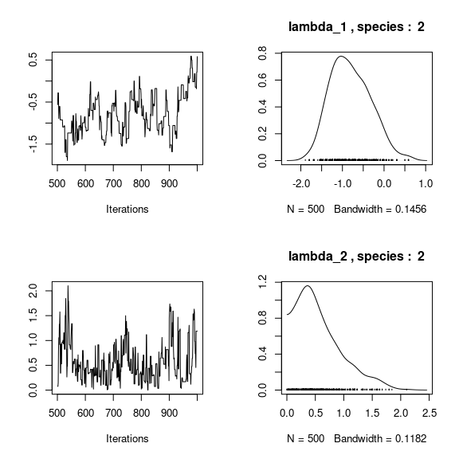
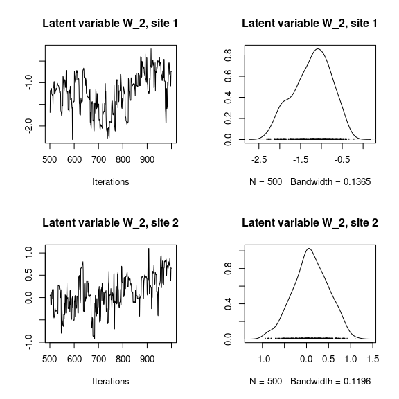
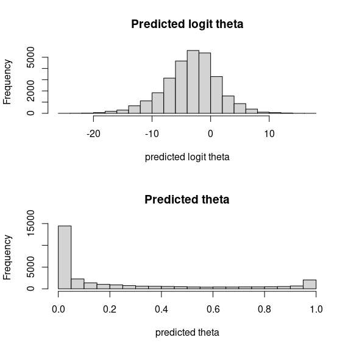

1 Model definition
Referring to the models used in the articles Albert & Siddhartha (1993) and Warton et al. (2015), we define the following model :
\[ \mathrm{logit}(\theta_{ij}) =\alpha_i + \beta_{0j}+X_i.\beta_j+ W_i.\lambda_j \]
Link function logit: \(\mathrm{logit}: p \rightarrow \log(\frac{p}{1-p})\).
Response variable: \(Y=(y_{ij})^{i=1,\ldots,nsite}_{j=1,\ldots,nsp}\) with:
\[y_{ij} \sim \mathcal{B}inomial(t_i, \theta_{ij})\].
\[y_{ij}=\begin{cases} 0 & \text{if species $j$ has been observed as absent during each visits at site $i$}\\ n & \text{if species $j$ has been observed as present during $n$ visits at site $i$ ($n \leq t_i$)}. \end{cases}\]
Latent variables: \(W_i=(W_i^1,\ldots,W_i^q)\) where \(q\) is the number of latent variables considered, which has to be fixed by the user (by default \(q=2\)). We assume that \(W_i \sim \mathcal{N}(0,I_q)\) and we define the associated coefficients: \(\lambda_j=(\lambda_j^1,\ldots, \lambda_j^q)'\). We use a prior distribution \(\mathcal{N}(0,10)\) for all lambdas not concerned by constraints to \(0\) on upper diagonal and to strictly positive values on diagonal.
Explanatory variables: bioclimatic data about each site. \(X=(X_i)_{i=1,\ldots,nsite}\) with \(X_i=(x_i^1,\ldots,x_i^p)\in \mathbb{R}^p\) where \(p\) is the number of bioclimatic variables considered. The corresponding regression coefficients for each species \(j\) are noted : \(\beta_j=(\beta_j^1,\ldots,\beta_j^p)'\).
\(\beta_{0j}\) correspond to the intercept for species \(j\) which is assume to be a fixed effect. We use a prior distribution \(\mathcal{N}(0,10)\) for all betas.
\(\alpha_i\) represents the random effect of site \(i\) such as \(\alpha_i \sim \mathcal{N}(0,V_{\alpha})\) and we assumed that \(V_{\alpha} \sim \mathcal {IG}(\text{shape}=0.5, \text{rate}=0.005)\) as prior distribution by default.
2 Occurence data-set

Figure 2.1: Swiss Breeding Bird Atlas (Kéry & Schmid 2006).
This data-set is available in the jSDM-package. It can be loaded with the data() command. The birds data-set is in “wide” format: each line is a site and the occurrence data are in columns.
The Swiss breeding bird survey (“Monitoring Häufige Brutvögel” MHB) has monitored the populations of 158 common species since 1999. The MHB sample consists of 267 1-km squares that are laid out as a grid across Switzerland. Fieldwork is conducted by about 200 skilled birdwatchers, most of them volunteers. Avian populations are monitored using a simplified territory mapping protocol, where each square is surveyed up to three times during the breeding season (only twice above the tree line). Surveys are conducted along a transect that does not change over the years.
The data-set contains the 2014 data, except for one quadrat not surveyed in 2014. It lists 158 bird species named in Latin and whose occurrences are expressed as the number of visits during which the species was observed on each site , with the exception of 13 species not surveyed in 2014 :
library(jSDM)
#> ##
#> ## jSDM R package
#> ## For joint species distribution models
#> ## https://ecology.ghislainv.fr/jSDM
#> ##
# birds data
data(birds, package="jSDM")
# Too large to display
#head(birds) We rearrange the data in two data-sets: a first one for the presence-absence observations for each species (columns) at each site (rows), and a second one for the site characteristics.
We also normalize the continuous explicative variables and remove species species present on less than 5 sites to facilitate MCMC convergence.
# data.obs
PA_birds <- birds[,1:158]
# Remove species with less than 5 presences
rare_sp <- which(apply(PA_birds>0, 2, sum) < 5)
PA_birds <- PA_birds[, -rare_sp]
# Normalized continuous variables
Env_birds <- data.frame(cbind(scale(birds[,c("elev","rlength","forest")]), birds[,"nsurvey"]))
colnames(Env_birds) <- c("elev","rlength","forest","nsurvey")
str(Env_birds)
#> 'data.frame': 266 obs. of 4 variables:
#> $ elev : num -1.1564 -1.1564 -0.2205 -0.3765 -0.0645 ...
#> $ rlength: num 1.017 0.296 -0.665 -0.505 0.216 ...
#> $ forest : num -1.15211 -0.5013 -0.10358 -0.93518 0.00489 ...
#> $ nsurvey: num 3 3 3 3 3 3 3 3 3 3 ...3 Parameter inference
We use the jSDM_binomial_logit() function to fit the JSDM (increase the number of iterations to achieve convergence).
mod_birds_jSDM_logit <- jSDM_binomial_logit(
# Chains
burnin=500, mcmc=500, thin=1,
# Response variable
presence_site_sp=PA_birds,
trials=Env_birds$nsurvey,
# Explanatory variables
site_suitability = ~ elev+rlength+forest,
site_data = Env_birds,
# Model specification
n_latent=2, site_effect="random",
# Starting values
alpha_start=0, beta_start=0,
lambda_start=0, W_start=0,
V_alpha=1,
# Priors
shape=0.1, rate=0.1,
mu_beta=0, V_beta=10,
mu_lambda=0, V_lambda=10,
# Various
ropt=0.44,
seed=1234, verbose=1)
#>
#> Running the Gibbs sampler. It may be long, please keep cool :)
#>
#> **********:10.0%, mean accept. rates= beta:0.221 lambda:0.211 W:0.355 alpha:0.267
#> **********:20.0%, mean accept. rates= beta:0.294 lambda:0.300 W:0.345 alpha:0.341
#> **********:30.0%, mean accept. rates= beta:0.365 lambda:0.358 W:0.385 alpha:0.394
#> **********:40.0%, mean accept. rates= beta:0.412 lambda:0.407 W:0.419 alpha:0.421
#> **********:50.0%, mean accept. rates= beta:0.431 lambda:0.428 W:0.437 alpha:0.438
#> **********:60.0%, mean accept. rates= beta:0.442 lambda:0.439 W:0.435 alpha:0.447
#> **********:70.0%, mean accept. rates= beta:0.441 lambda:0.435 W:0.440 alpha:0.444
#> **********:80.0%, mean accept. rates= beta:0.440 lambda:0.430 W:0.436 alpha:0.448
#> **********:90.0%, mean accept. rates= beta:0.437 lambda:0.433 W:0.438 alpha:0.445
#> **********:100.0%, mean accept. rates= beta:0.442 lambda:0.429 W:0.436 alpha:0.4514 Analysis of the results
np <- nrow(mod_birds_jSDM_logit$model_spec$beta_start)
# beta_j of the first two species
par(mfrow=c(2,2))
for (j in 1:2) {
for (p in 1:np) {
coda::traceplot(coda::as.mcmc(mod_birds_jSDM_logit$mcmc.sp[[paste0("sp_",j)]][,p]))
coda::densplot(coda::as.mcmc(mod_birds_jSDM_logit$mcmc.sp[[paste0("sp_",j)]][,p]),
main = paste(colnames(mod_birds_jSDM_logit$mcmc.sp[[paste0("sp_",j)]])[p],
", species : ",j))
}
}
# lambda_j of the first two species
n_latent <- mod_birds_jSDM_logit$model_spec$n_latent
par(mfrow=c(2,2))
for (j in 1:2) {
for (l in 1:n_latent) {
coda::traceplot(coda::as.mcmc(mod_birds_jSDM_logit$mcmc.sp[[paste0("sp_",j)]][,np+l]))
coda::densplot(coda::as.mcmc(mod_birds_jSDM_logit$mcmc.sp[[paste0("sp_",j)]][,np+l]),
main = paste(colnames(mod_birds_jSDM_logit$mcmc.sp[[paste0("sp_",j)]])[np+l],
", species : ",j))
}
}
## Latent variables W_i for the first two sites
par(mfrow=c(2,2))
for (l in 1:n_latent) {
for (i in 1:2) {
coda::traceplot(mod_birds_jSDM_logit$mcmc.latent[[paste0("lv_",l)]][,i],
main = paste0("Latent variable W_", l, ", site ", i))
coda::densplot(mod_birds_jSDM_logit$mcmc.latent[[paste0("lv_",l)]][,i],
main = paste0("Latent variable W_", l, ", site ", i))
}
}
## V_alpha
par(mfrow=c(2,2))
coda::traceplot(mod_birds_jSDM_logit$mcmc.V_alpha)
coda::densplot(mod_birds_jSDM_logit$mcmc.V_alpha)
## Deviance
coda::traceplot(mod_birds_jSDM_logit$mcmc.Deviance)
coda::densplot(mod_birds_jSDM_logit$mcmc.Deviance)
# theta
par (mfrow=c(2,1))
hist(logit(mod_birds_jSDM_logit$theta_latent), main = "Predicted logit theta", xlab ="predicted logit theta")
hist(mod_birds_jSDM_logit$theta_latent, main = "Predicted theta", xlab ="predicted theta")
5 Matrice of correlations
After fitting the jSDM with latent variables, the fullspecies residual correlation matrix \(R=(R_{ij})^{i=1,\ldots, nspecies}_{j=1,\ldots, nspecies}\) can bederived from the covariance in the latent variables such as : \[\Sigma_{ij} = \begin{cases} \lambda_i .\lambda_j^T & \text{ if } i \neq j \\ \lambda_i .\lambda_j^T + 1 & \text{ if } i=j \end{cases}\], then we compute correlations from covariances : \[R_{i,j} = \frac{\Sigma_{ij}}{\sqrt{\Sigma _{ii}\Sigma _{jj}}}\].
We use the function plot_residual_cor() to compute and display the residual correlation matrix between species :
plot_residual_cor(mod_birds_jSDM_logit, tl.cex=0.25)
6 Predictions
We use the predict.jSDM() S3 method on the mod_birds_jSDM_logit object of class jSDM to compute the mean (or expectation) of the posterior distributions obtained and get the expected values of model’s parameters.
# Sites and species concerned by predictions :
## 100 sites among the 266
Id_sites <- sample.int(nrow(PA_birds), 100)
## All species
Id_species <- colnames(PA_birds)
# Simulate new observations of covariates on those sites
simdata <- matrix(nrow=100, ncol = ncol(mod_birds_jSDM_logit$model_spec$site_data))
colnames(simdata) <- colnames(mod_birds_jSDM_logit$model_spec$site_data)
rownames(simdata) <- Id_sites
simdata <- as.data.frame(simdata)
simdata$forest <- rnorm(100)
simdata$rlength <- rnorm(100)
simdata$elev <- rnorm(100)
# Predictions
theta_pred <- predict(mod_birds_jSDM_logit, newdata=simdata, Id_species=Id_species,
Id_sites=Id_sites, type="mean")
hist(theta_pred, main="Predicted theta with simulated data", xlab="predicted theta")References
Albert, J.H. & Siddhartha, C. (1993) Bayesian analysis of binary and polychotomous response data. Journal of the American Statistical Association, 88, 669–679.
Kéry, M. & Schmid, H. (2006) Estimating species richness: Calibrating a large avian monitoring programme. Journal of Applied Ecology, 43, 101–110.
Warton, D.I., Blanchet, F.G., O’Hara, R.B., Ovaskainen, O., Taskinen, S., Walker, S.C. & Hui, F.K.C. (2015) So many variables: Joint modeling in community ecology. Trends in Ecology & Evolution, 30, 766–779.